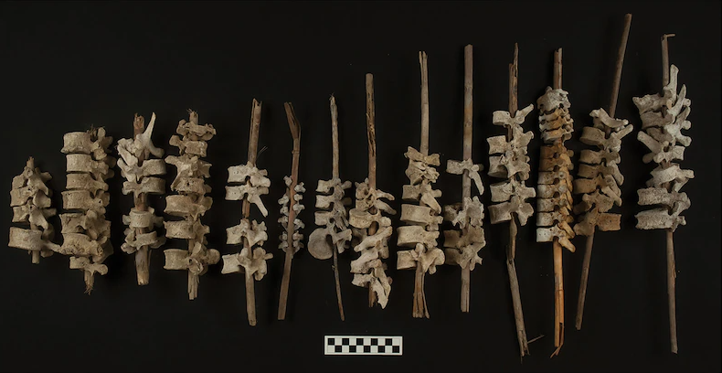
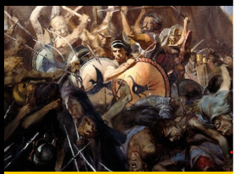
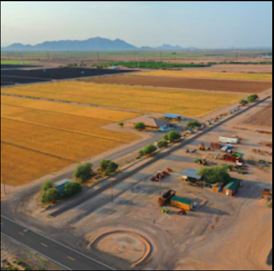
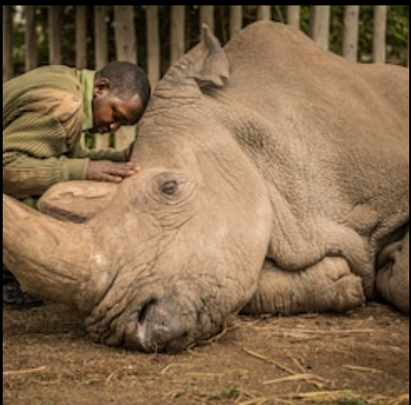
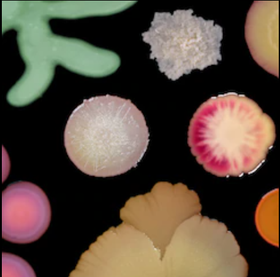

History & Culture
Into the Depths: A 6 part series featureing Nat Geo Explorer Tara Roberts
Listen NowTodays Picks

Enviroment Planet Possible
Extreme drought creates unlikely farming allies in Arizona

Photography
National Geographic celebrates 200 millino Instagram followers

Enviroment Planet Possible
The Pandemic likely made the rise of superbugs worse
History & Culture
Why Lunar New Year prompts the world's largest annual migration
History & Culture
Who was Anne Frank? Why her legacy is stillfought over today
Travel Coronavirus Coverage
New tools help make Covid-19 safer